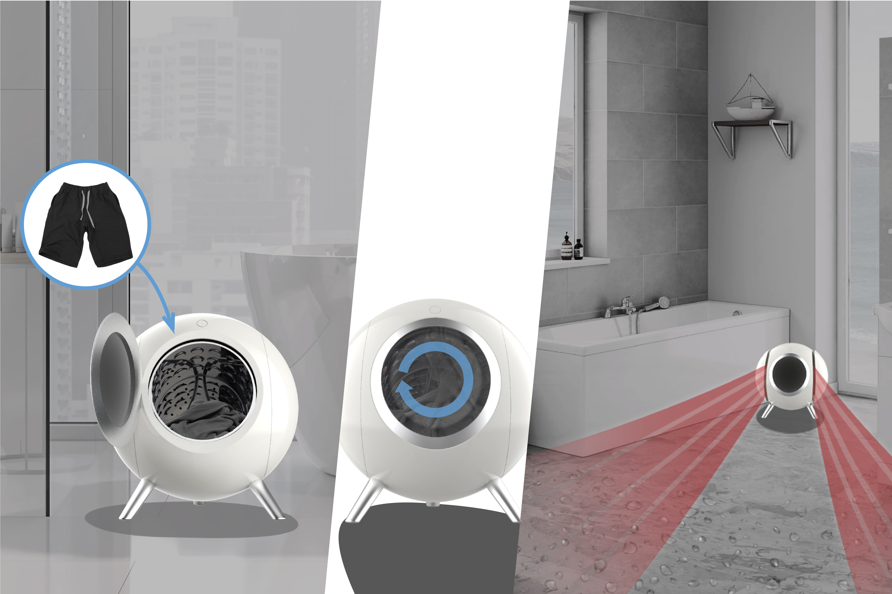
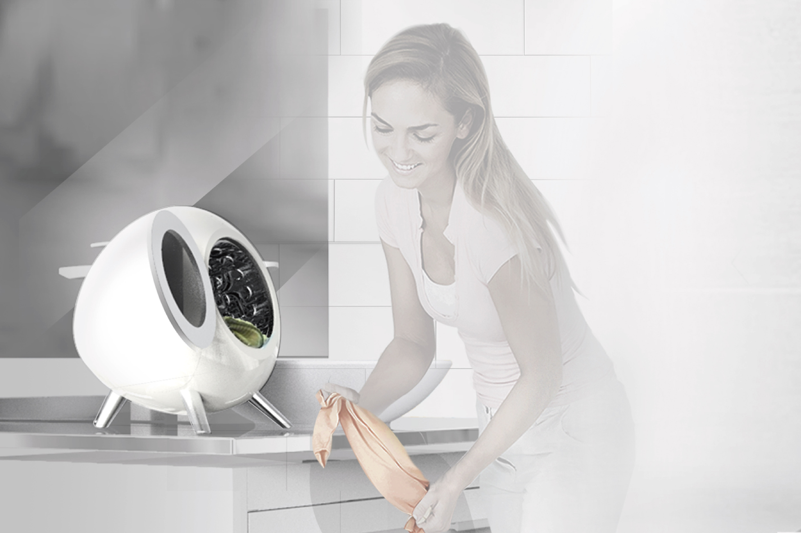
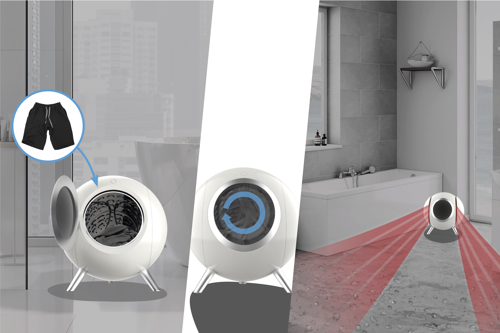
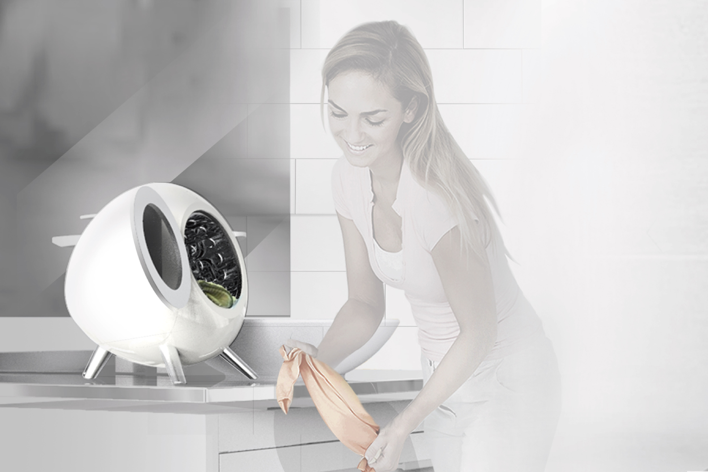

Easy Dry-O
Compact dryer for single-person households. Focused on quick spot-drying for daily laundry, towels, or shoes with low energy and portable footprint.
Overview
Due to the increase in the number of single households, many products in the market are suitable for a family. Since laundry and cleaning were a problem for them as well, they are using the money for a comfortable life. Easy Dry-O can help single household's work by providing a dry bathroom and the ability to dry clothes and feet. The products used for family size are big and wasteful for a single household, it is a reality that they hesitate to buy family size product. For that reason, among them, some of them are doing hand wash their daily laundry, so they use the drying rack, but sometimes, laundry is too many for laundry rack to handle. That's why I designed the Easy Dry-O to solve problems and solve other problems as well. The hot air from the Easy Dry-O is used to dry the feet immediately after bathing and dry the humid bathroom quickly. It also dries the underwear and sportswear as well.
Details
Gallery
 


